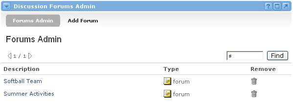

Editing and Deleting Forums
The Discussion Forums Admin channel allows a user to find any and all forums. To do so, follow these instructions:
- Locate the Discussion Forums Admin Channel.
- Enter text into the Find box at the top of the channel. Or, leave the box blank to see a list of all forums.
- Click Find.
- You will now see a list of forums that match your search string. From this view you can edit or delete forums.
To edit a forum:
- Click the forum names to edit details, add or remove users and groups, or to alter the permissions for any groups or users.
To delete a forum:
- Click on the Delete icon in the Remove column for the desired forum.
- You will be prompted to confirm the deletion of the selected forum. Click OK to proceed with the removal of the forum. Click Cancel to return to the forum list view.
